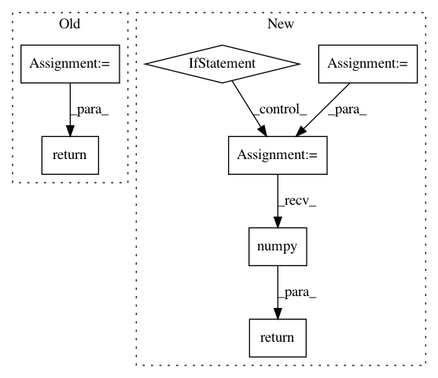

8af5800b9a74cf7b2c8d2577b7d9be3ef987f26b,detect.py,,detect_image,#Any#Any#Any#Any#Any#,65
Before Change
Tensor = torch.cuda.FloatTensor if torch.cuda.is_available() else torch.FloatTensor
// Configure input
input_img = Variable(image.type(Tensor))
// Get detections
with torch.no_grad():
detections = model(input_img)
detections = non_max_suppression(detections, conf_thres, nms_thres)
return detections
def detect(model, dataloader, output_path,
img_size, conf_thres, nms_thres):
Inferences images with model.
After Change
model.eval() // Set model to evaluation mode
// Configure input
input_img = transforms.Compose([
DEFAULT_TRANSFORMS,
Resize(img_size)])(
(image, np.zeros((1, 5))))[0].unsqueeze(0)
if torch.cuda.is_available():
input_img = input_img.to("cuda")
// Get detections
with torch.no_grad():
detections = model(input_img)
detections = non_max_suppression(detections, conf_thres, nms_thres)
detections = rescale_boxes(detections[0], img_size, image.shape[:2])
return to_cpu(detections).numpy()
def detect(model, dataloader, output_path,
img_size, conf_thres, nms_thres):
Inferences images with model.
In pattern: SUPERPATTERN
Frequency: 3
Non-data size: 7
Instances
Project Name: eriklindernoren/PyTorch-YOLOv3
Commit Name: 8af5800b9a74cf7b2c8d2577b7d9be3ef987f26b
Time: 2021-04-09
Author: florian@flova.de
File Name: detect.py
Class Name:
Method Name: detect_image
Project Name: interactiveaudiolab/nussl
Commit Name: 2ffbfa3a6bd3b8de8e21a762489346054dcd9ccc
Time: 2020-03-12
Author: prem@u.northwestern.edu
File Name: nussl/separation/deep/deep_mask_estimation.py
Class Name: DeepMaskEstimation
Method Name: extract_features
Project Name: kengz/SLM-Lab
Commit Name: 5a126fc7cac272dfe2514554ef228001c795d729
Time: 2019-08-03
Author: kengzwl@gmail.com
File Name: slm_lab/agent/algorithm/sac.py
Class Name: SoftActorCritic
Method Name: act